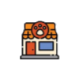

<!DOCTYPE html>
<html>
<head>
    <meta charset="utf-8"/>
    <title>Mapa de Mascotas</title>
    <!- enlace a la página para insertar mapa ->
    <link rel="stylesheet" href="https://unpkg.com/leaflet@1.7.1/dist/leaflet.css"/>
    <script src="https://unpkg.com/leaflet@1.7.1/dist/leaflet.js"></script>
    <!- estilo para el mapa ->
    <style>
        #map { height: 100vh; width: 100%;
         margin: 0;
         padding: 0;
       }
       img { max-width: 100px; height: auto; }

       .marker-img {
            width: 50px;
            height: 50px;
            border-radius: 50%;
            overflow: hidden;
            border: 2px solid rgba(0, 0, 0, 0.4); /* borde opaco */
            box-shadow: 0 0 5px rgba(0, 0, 0, 0.5); /* sombra sutil */
            background-color: white;
        }

        .marker-img img {
            width: 100%;
            height: 100%;
            object-fit: cover;
            display: block;
        }

    </style>
</head>
<body>
<div id="map"></div>
<script>
    window.onload = () => {
    let map;

    //Cargar mapa
    window.procesarMapa = function(coordenadas) {
        map = L.map('map').setView([coordenadas.lat, coordenadas.lon], coordenadas.zoom);

        L.tileLayer('https://{s}.tile.openstreetmap.org/{z}/{x}/{y}.png').addTo(map);
    };

    // Reportes de animales
    window.procesarReportes = function(reportes, animales) {
        reportes.forEach(r => {

            let nombreImagen = "";
            if (r.enAdopcion) {
                nombreImagen = "../images/leyenda/adopcion.png";
            } else {
                switch (r.tipo) {
                    case 1: nombreImagen = "../images/leyenda/perro.png"; break;
                    case 2: nombreImagen = "../images/leyenda/gato.png"; break;
                    case 3: nombreImagen = "../images/leyenda/ave.png"; break;
                    case 4: nombreImagen = "../images/leyenda/otro.png"; break;
                }
            }

            // Crear un div con una imagen circular
            var html = `
                <div class="marker-img">
                
                </div>
            `;

            var marker = L.divIcon({
                html: html,
                className: '', // evita estilos por defecto
                iconSize: [50, 50],
                iconAnchor: [25, 50],
                popupAnchor: [0, -50]
            });

            const animalRelacionado = animales.find(a => a.id == r.id);
            var popup = "";

            if(!animalRelacionado) {
                popup = `<strong>${r.nombre}</strong><br>${r.descripcion}<br>`;
            } else {
                popup = `<br><strong>${r.nombre}</strong><br>${r.descripcion}<br>`;
            }

            L.marker([r.lat, r.lng], { icon: marker }).addTo(map).bindPopup(popup);
        });
    };

    // Locales PetFriendly
    window.procesarLocales = function(locales, usuarios) {
        locales.forEach(loc => {
            // Crear un div con una imagen circular
            var html = `
                <div class="marker-img">
                
                </div>
            `;

            var marker = L.divIcon({
                html: html,
                className: '', // evita estilos por defecto
                iconSize: [50, 50],
                iconAnchor: [25, 50],
                popupAnchor: [0, -50]
            });

            const usuarioRelacionado = usuarios.find(u => u.id == loc.idUsuario);
            var popup = "";

            if(!usuarioRelacionado) {
                popup = `<strong>${loc.nombre}</strong><br>${loc.descripcion}<br>`;
            } else {
                popup = `<br><strong>${loc.nombre}</strong><br>${loc.descripcion}<br>`;
            }

            L.marker([loc.lat, loc.lng], { icon: marker }).addTo(map).bindPopup(popup);
        });
    };

    // Protectoras
    window.procesarProtectoras = function(protectoras, usuarios) {
        protectoras.forEach(p => {
            // Crear un div con una imagen circular
            var html = `
                <div class="marker-img">
                
                </div>
            `;

            var marker = L.divIcon({
                html: html,
                className: '', // evita estilos por defecto
                iconSize: [50, 50],
                iconAnchor: [25, 50],
                popupAnchor: [0, -50]
            });

            const usuarioRelacionado = usuarios.find(u => u.id == p.idUsuario);
            var popup = "";

            if(!usuarioRelacionado) {
                popup = `<strong>${p.nombre}</strong><br>${p.descripcion}<br>`;
            } else {
                popup = `<br><strong>${p.nombre}</strong><br>${p.descripcion}<br>`;
            }

            L.marker([p.lat, p.lng], { icon: marker }).addTo(map).bindPopup(popup);
        });
    };

    // Veterinarios
    window.procesarVeterinarios = function(veterinarios, usuarios) {
        veterinarios.forEach(v => {
            // Crear un div con una imagen circular
            var html = `
                <div class="marker-img">
                
                </div>
            `;

            var marker = L.divIcon({
                html: html,
                className: '', // evita estilos por defecto
                iconSize: [50, 50],
                iconAnchor: [25, 50],
                popupAnchor: [0, -50]
            });

            const usuarioRelacionado = usuarios.find(u => u.id == v.idUsuario);
            var popup = "";

            if(!usuarioRelacionado) {
                popup = `<strong>${v.nombre}</strong><br>${v.descripcion}<br>`;
            } else {
                popup = `<br><strong>${v.nombre}</strong><br>${v.descripcion}<br>`;
            }

            L.marker([v.lat, v.lng], { icon: marker }).addTo(map).bindPopup(popup);
        });
    };
    }
</script><!--
    // Recibe un array de mascotas y las agrega
    window.procesarMascotas = function(mascotas) {
    mascotas.forEach(m => {
        // Crear un div con una imagen circular
        var html = `
            <div class="marcador-img">
                
            </div>
        `;

        var icono = L.divIcon({
            html: html,
            className: '', // evita estilos por defecto
            iconSize: [50, 50],
            iconAnchor: [25, 50],
            popupAnchor: [0, -50]
        });

        var popup = "<strong>" + m.nombre + "</strong><br>" + m.descripcion +
            "<br>";

        L.marker([m.lat, m.lng], { icon: icono }).addTo(map).bindPopup(popup);
    });
};

</script>-->
</body>
</html>
